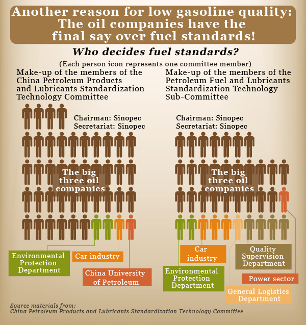
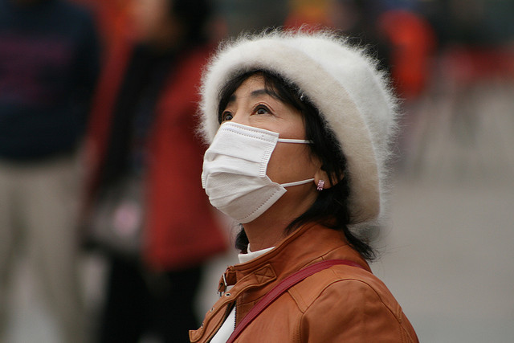

Pollution is widespread across the world, but most concentrated in China. It’s important to deal with because of the myriad of health problems it causes to people and the environment. Quality of life is heavily affected when pollution exists, especially at such high levels as are seen in big cities such as Beijing, Shanghai, and Hong Kong. If not contained, this pollution may escalate to even more frightening levels, and cause many more deaths.
The Chinese government is not oblivious to the pollution that has been steadily increasing every year. In fact, they’ve made many public statements regarding this, always promising to reform, to improve the health of their people. Despite this, not much has been done and the Chinese citizens grow dissatisfied of their leadership’s unwillingness to help. China’s President Xi Jinping has already “pledeged to tackle pollution”, yet there’s evidence that he and others really just want to lie to the public (Khan, 2014). In 2007, the World Bank was pressured by the Chinese government to censor a study showing that 750,000 people in China die yearly due to pollution-related diseases (Toy, 2007). China’s State Environment Protection Agency acted in a way totally unlike themselves, as instead of being proponents of “tougher action on pollution”, it requested the World Bank to “cut the calculations of premature deaths from the report, along with the map”.
The origins of China’s pollution stem partly because of the vehicle emissions, or more specifically, the quality of the gasoline burned. China has had to shut down factories and government vehicles in the past the severe pollution, and it’s the state-run oil companies that are being blamed for this. The allowed quantity of sulfur content in gasoline in China is 500% that of the United States, and 1,500% that of Europe’s. This results in massively higher traces of nitrogen oxides, volatile organic matter, and other fine particulates spreading through the air and causing many different health issues for everyone (Wertime, 2013). Even if the government wanted to create better laws to force oil companies to sell cleaner gasoline, they can’t because the committees that decide the fuel standards are controlled by the “big three” oil companies!
So who can we say is to blame for the pollution? It’s definitely being caused by the companies producing power for the country, but it’s also because of the government not wanting to create any change.
There’s actually various different solutions that can be used to fix pollution, and it’s probably better to use more than one for most effectiveness. We need to attack the problem from multiple angles. One way we can clean up China’s air is by creating new legislation to limit the amount of allowed particles. We can control the quality of gasoline sold by removing the control of the oil companies over regulatory bodies. Next, the Chinese people need to demand their government to take real action, instead of empty promises. They need to show the government that it needs to expedite whatever measures it’s going to take. Also, there’s new inventions being created to lower the pollution that already exists, and these could have a very dramatic impact in the near future if used effectively.
Beijing has actually been proactive recently in trying to lower the pollution. They’ve implemented bans on factories and plants that produce too much smog, as well as trying to stop other plants from “expanding”. Those that break the rules will be heavily fined (Jing, 2014). Despite this, Dr Yang Fuqiang, a senior adviser to the Natural Resources Defence Council, believes that the city could be tougher still on violators of the new pollution limits. According to him, "Beijing could have been more aggressive in taking a lead in tackling the city's notorious air pollution.” Regardless, some progress is better than none, as Beijing is now spending 760 billion yuan to fight smog in the city, and subsequently reducing PM2.5 by 25 percent by 2017. Not only this, but the Chinese government as a whole is trying to reduce total coal consumption from 70% of the fuel used to 65% (Spegele, 2013). This is just the beginning in a series of policy and attitude changes the government has taken as the concern over health issues rises.
Some citizens have taken matters into their own hands already, as protests have become increasingly violent. On May 11, 2014, protesters clashed with the police as they try to stop the creation of a waste incineration plant in the Hangzhou area that will increase air pollution (Areddy, 2014). At least 10 residents and 29 police officers were injured in hand-to-hand combat, and for the most part, the people were successful in at least slowing down the progress of construction. Throughout China, citizens have been stopped construction of plants. Local governments don’t like to go through with these kinds of things without public support, but we do not know what the national government’s response to these kinds of clashes is.
Artificial rain is being considered as a very real and impactful option to lower smog. Rockets equipped with silver iodide particles are shot into the clouds, which cause super-cooled liquid water to form, and subsequently it rains or snows (Slezak, 2013). Now there’s new research with proposes a much simpler and effective solution. Essentially, the plan is to equip tall building with sprinklers that act just as real rain would, grounding hazardous particles (Yu, 2014). Not only is it very effective, it’s also inexpensive to implement and the process is “nature-like”. If enough water is sprayed into the atmosphere, the precipitation scavenging can remove the air pollution in less than 30 minutes. Furthermore, all of the technology needed for this is readily available. There are some fine details that are being worked on, primarily figuring out when are the best times to spray into the air, along with some safety concerns, such as preventing flooding, over-humidification, and slippery roads on cold days. Also, if the water doesn’t completely evaporate it may actually increase the PM2.5 count. All of these details, however, can be worked out and tailored specific to each city. It may very well become a permanent tool for the Chinese (and other countries) to lower the amount of air pollution.
To protect themselves from the probably-poisoned vegetables coming from mainland China, the people of Hong Kong have started rooftop gardens to ensure the quality of their food. Where there used to be zero of these gardens, there are now more than 100. Beijing is following the organic farm trend also, because there is a lack of confidence in China’s food supply (Falk, 2013). According to Guichun Zhang, who has created many of these gardens in his city of Beijing, says there are 90 million square miles of empty rooftops (Baldegg 2013).
Audience AnalysisFirstly, this is a problem that all Chinese people are aware of. A survey given by the Pubic Opinion Research Center (and directed by Shanghai Jiao Tong University) finds that 80 percent of Chinese think environmental protection should take precedence over economic advancement (Survey: Govt needs to focus more on environment, 2013).
This issue is not only relevant to the Chinese, it has become a global issue, as there is so much pollution now that it’s being blown over across the Pacific Ocean and into California (Khan, 2014). The amount of the United States’ pollution directly caused by western winds coming from China is a small amount, however. Also, a substantial portion (about 21 percent) of China’s pollutants can be traced back to the production of products later exported to the US. We are part of the problem, and we must now seek to be part of the solution as well.
The problem of pollution affects everyone worldwide, no matter where they are. All of us share the same Earth, and have a responsibility to care for it.